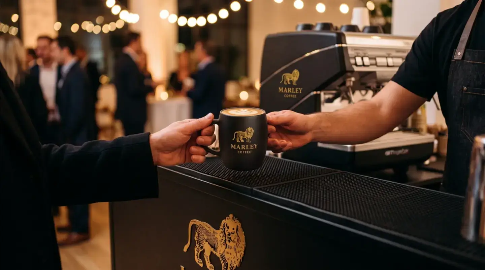

Marley Coffee · Empresas · Eventos y catering

¿Cómo planificar café para eventos y catering?
Para planificar café en un evento, parte por asistentes, duración, formato de servicio y momentos de mayor demanda. Esa estimación ayuda a organizar equipo, personas, insumos y reposición, que deben confirmarse para cada lugar y propuesta.

Cómo funciona la evaluación
- Describe el evento: Indica asistentes, duración, horarios, lugar y bebidas previstas.
- Calcula el flujo: Estima tazas por tramo horario y considera esperas, personal y autoservicio.
- Confirma logística: Revisa equipo, electricidad, agua, montaje, limpieza, transporte e insumos con quienes proveen el servicio.
Compatibilidad, disponibilidad, servicios, soporte y condiciones comerciales se confirman para cada operación en una propuesta.
Qué comparar
| Asistencia | Invitados, horarios y duración. |
|---|---|
| Formato | Autoservicio, atención y ritmo de servicio. |
| Logística | Lugar, conexiones, montaje, insumos y reposición. |
Preguntas habituales de compradores
¿Cuánto café debo calcular para un evento?
Usa asistentes esperados, tazas estimadas y registros de eventos similares; separa el cálculo por horarios si cambia la demanda.
¿Qué necesito para un coffee break de empresa?
Define horario, asistentes, espacio, servicio, bebidas, equipo y responsables; confirma disponibilidad y costos en una propuesta.
¿Se puede adaptar el servicio al lugar?
Describe conexiones, acceso y restricciones del recinto para revisar qué opciones son viables.